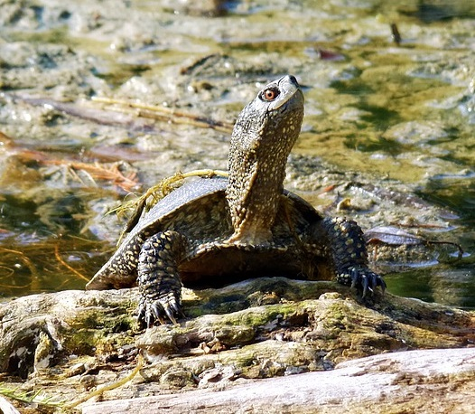

Zaskroniec Zwyczajny
Możemy spotkać go w Europie, Azji Zachodniej, Azji Mniejszej i Środkowej oraz w Afryce. W Polsce jest dość pospolity i można go spotkać najczęściej w niedalekiej odległości od zbiorników wodnych. Jest obecny na terenie całego kraju.
Żywi się głównie płazami. Zjada te gatunki płazów, które są w danej okolicy najbardziej liczne. Rzadko zjada też ryby i jaszczurki. Nie poluje na kijanki.
Jeżeli się schwyta do ręki zaskrońca, wydziela z okolic kloaki białą, cuchnącą ciecz. Zaskroniec dość łatwo się jednak oswaja. Je wtedy z ręki i nie broni się za pomocą wystrzykiwania cieczy kloakalnej. Gatunek ten nie jest zagrożony wymarciem. Ma status LC w Czerwonej Księdze Gatunków Zagrożonych. W Polsce jest objęty całkowitą ochroną prawną.
Żmija Zygzakowata
Występuje w Europie i północnej Azji. Preferuje środowiska porośnięte trawami. W górach występuje na wysokości do 2000 m n.p.m.
Zjada gryzonie polne, ryjówki, krety, pisklęta, czasem żaby i jaszczurki. Ofiarę zabija poprzez jadowite ukąszenie i pożera martwą.
Gatunek ten nie jest zagrożony wymarciem. Ma status LC w Czerwonej Księdze Gatunków Zagrożonych. W Polsce żmija jest objęta całkowitą ochroną prawną. Ze względu na niebezpieczeństwo śmiertelnego ukąszenia żmija jest powszechnie tępiona przez ludzi. Ta jednak kąsa tylko w ostateczności, stara się uciekać przed człowiekiem. Warto zauważyć, że żmija jest zwierzęciem bardzo pożytecznym poprzez tępienie ogromnej liczby szkodników. Największym wrogiem tego gatunku jest człowiek oraz jeż.
Jaszczurka Zielona
Żyje w południowej Europie. Bardzo rzadko można ją spotkać w Polsce na Śląsku Cieszyńskim. Dziś prawdopodobnie jest gatunkiem zanikłym na naszym terenie.
Jest aktywna w dzień. Preferuje trawiaste lub skaliste obszary. Jest ciepłolubna. Często sama kopie długie nory zakończone komorą mieszkalną. Tu też spędza zimę. Jaszczurka zielona zjada głównie stawonogi, czasem także inne jaszczurki i węże.
Jaszczurka zielona jest największą krajową jaszczurką. Gatunek ten nie jest zagrożony wymarciem. Ma status LC w Czerwonej Księdze Gatunków Zagrożonych. W Polsce jest objęta całkowitą ochroną prawną.
Jaszczurka Zwinka
Zamieszkuje suche lasy, parki, ogrody nasypy kolejowe, kamieniste zbocza i inne nasłonecznione miejsca Europy i Azji. Granicą pionowego występowania jest wysokość 1550 m n.p.m.
Schwytana zwinka odrzuca ogon i ucieka. Jest to niezwykle zwinny i szybki gad. Zjada pająki, owady i ślimaki.
Jaszczurka zwinka jest najbardziej pospolitym gadem Polski. Gatunek ten nie jest zagrożony wymarciem. Ma status LC w Czerwonej Księdze Gatunków Zagrożonych. Podlega ścisłej ochronie w Polsce.
Jaszczurka Żyworodna
Zamieszkuje duży obszar Europy i Azji. W Polsce rzadka na nizinach, często jednak spotykana w terenie górzystym. W Polsce górna granica występowania to 1700 m n.p.m., a Alpach to 3000 m n.p.m.
Lubi wilgotne środowisko. Przed zagrożeniem ucieka do wody. Zjada owady, dżdżownice, ślimaki, pająki, wije, stonogi i inne bezkręgowce. Ten gatunek jaszczurki jest żyworodny. Samica rodzi od 5 do 13 młodych w końcu sierpnia lub we wrześniu. W górach samice rodzą raz na dwa lata.
Gatunek ten nie jest zagrożony wymarciem. Ma status LC w Czerwonej Księdze Gatunków Zagrożonych. W Polsce podlega całkowitej ochronie.
Padalec Zwyczajny
W Polsce padalec zwyczajny jest spotykany na terenie całego kraju. Występowanie obejmuje całą Europę, część Azji.
Padalec zwyczajny jest jajożyworodny. Młode mają długość do 10 cm i rodzą się w osłonkach jajowych. Osłonki rozrywane są w trakcie porodu lub tuż po nim. Młode są od razu zdolne do samodzielnego życia. Samica w roku zwykle rodzi od 6 do 16 sztuk. Jest całkowicie bezbronny. Ze względu na swój wygląd mylony jest ze żmiją. Padalec zwyczajny nie jest jadowity.
Gatunek ten bliski zagrożenia wymarciem. Ma status NT w Czerwonej Księdze Gatunków Zagrożonych. Padalec zwyczajny jest gatunkiem w Polsce objętym całkowitą ochroną prawną.
Żółw Błotny
Występuje w Środkowej i południowej cześci Europy, zachodniej Azji, północno-zachodniej Afryce. Dawniej żółw błotny był spotykany na terenie całej Polski. Dziś jest bardzo rzadki i występuje tylko wyspowo.
Żeruje w wodzie. Żyje głównie w tym środowisku. Na ląd wychodzi w celu wygrzania się na słońcu. W wodzie porusza się sprawnie, na lądzie niezdarnie i powoli. Jest aktywny za dnia. Żyje w zbiornikach wody stojącej lub wolno płynącej. Zimuje na dnie zbiorników wodnych. Jest odporny na niskie temperatury, ruchliwość traci dopiero w temperaturze 2-3°C. Nie jest zaś odporny na suszę. Zjada lawy owadów, ślimaki, kijanki, czasem płazy i ryby.
To jedyny żółw występujący w naszym kraju. Gatunek ten bliski zagrożenia wymarciem. Ma status NT w Czerwonej Księdze Gatunków Zagrożonych. W Polsce jest to gatunek objęty całkowitą ochroną prawną i jest bardzo rzadko występującym gadem.